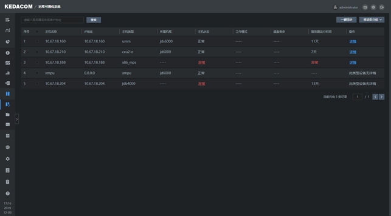
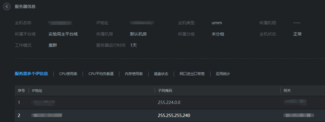

主机同步功能主要是可以将LUBAN系统里的设备列表一键同步过来，无需再手动操作。

一键同步
点击【一键同步】按钮，将该项目环境的所有的设备的主机名称、IP地址、主机类型、主机状态等信息全部同步至大数据运维系统。
移动至分组
勾选主机名称左侧的复选框，点击【移动至分组】，选择分组名称，将勾选的设备移动至分组内。
查看详情
点击服务器右侧的详情，查看该服务器的详细信息。

搜索
在方框条内输入服务器名称或者IP地址，点击【搜索】即可快速搜索出指定设备。